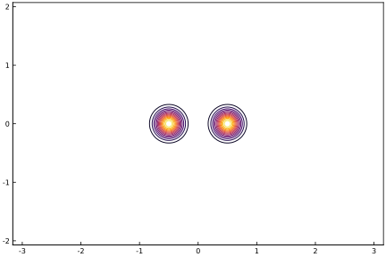
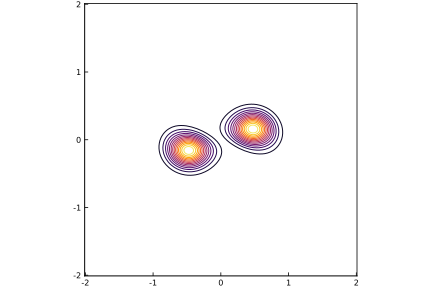
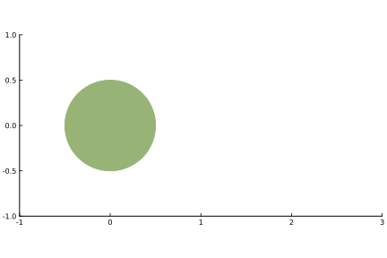
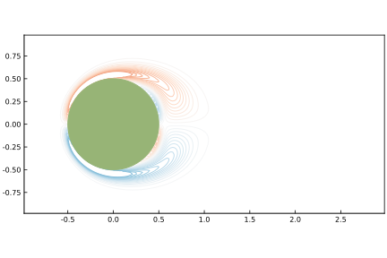
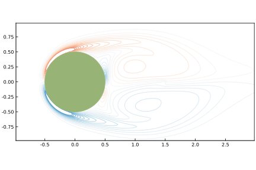
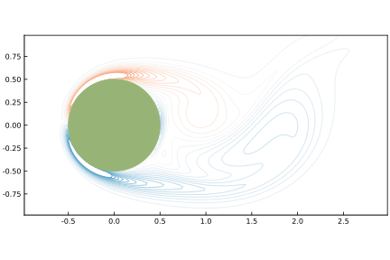
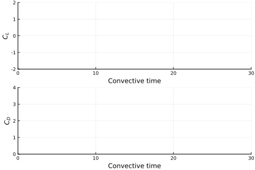

Navier-Stokes systems
Here, we will focus on putting tools together from the previous sections in order to set up and solve the Navier-Stokes system of equations. First, we will solve them in a completely unbounded domain (i.e., no bodies), and then we will solve them in the vicinity of a body.
Navier-Stokes without a body
Here, we seek the solve the two-dimensional incompressible Navier-Stokes equations in their discrete vorticity form, in an unbounded domain:
along with the initial condition
The field $w$ represents the discrete vorticity, which sits at the nodes of the dual cells. The velocity, $v$, lies on the edges of the primal cells. They are related to each other by $v = Cs$, where $s = -L^{-1} w$ is the discrete streamfunction.
The second term on the left-hand side is the convective term, which we have simply written as $N(v,w)$. There are several ways to write this term; here, we will write it by using the discrete divergence,
The Systems module has a function that is set up to compute this term; we will discuss it below. The right-hand side contains the viscous term, proportional to $1/Re$, where $Re$ is the Reynolds number. For this, we will use the integrating factor, described in The integrating factor. For purposes of calculation, it is better to express the problem as
where $r_1(w) = -D(vw)$.
For demonstration, we will solve a problem consisting initially of two identical circular patches of vorticity.
The first thing we must do is set up a grid. We will make it square, with spacing equal to 0.02 in each cell.
julia> xlim = (-2,2); ylim = (-2,2);
julia> Δx = 0.02;Now we will set the Reynolds number, and set the time step size so that it follows the so-called CFL condition (with CFL number set to 0.5). To be careful, we also make sure the time step size does not exceed a threshold in the grid Fourier number (also set to 0.5):
julia> Re = 200
200
julia> Δt = min(0.5*Δx,0.5*Δx^2*Re)
0.01Now we set up the Navier-Stokes system. This sets the rest of the grid parameters, (number of cells, etc), and creates some some buffer space on the grid.
julia> sys = NavierStokes(Re,Δx,xlim,ylim,Δt)
Navier-Stokes system on a grid of size 202 x 202For example, to check how many dual grid cells we have, we can use the size function, which has been extended to such systems:
julia> size(sys)
(202, 202)Let's set up a set of dual nodes on this grid:
julia> w₀ = Nodes(Dual,size(sys));The physical grid coordinates of these dual nodes can be generated with the coordinates function:
julia> xg, yg = coordinates(w₀,dx=sys.Δx,I0=Systems.origin(sys))
(-2.0100000000000002:0.02:2.0100000000000002, -2.0100000000000002:0.02:2.0100000000000002)Now we are ready to set up the integrator for this problem. To account for the viscous diffusion, we need the integrating factor. There are no body constraints to enforce, so we will use the integrating factor Runge-Kutta method (IFRK). For this, we need to set up plans for the integrating factor and for the right-hand side ($r_1$). The Systems module has functions that do both for us, using the system data in sys. We just need to change their argument list so that they fit the template for the IFRK scheme:
julia> plan_intfact(t,w) = Systems.plan_intfact(t,w,sys)
plan_intfact (generic function with 1 method)
julia> r₁(w,t) = Systems.r₁(w,t,sys)
r₁ (generic function with 1 method)Now we can construct the integrator. We will use 3rd-order Runge-Kutta:
julia> ifrk = IFRK(w₀,sys.Δt,plan_intfact,r₁,rk=TimeMarching.RK31)
Order-3 IF-RK integator with
State of type Nodes{Dual,202,202}
Time step size 0.01Note that we have only passed in w₀ to this scheme to provide the form of data to be used for the state vector in the integrator. It does not matter that the data are still zeros.
Finally we are ready to solve the problem. We set up the initial condition. It is helpful to define a function first that specifies the vorticity distribution in each vortex patch. We will use a Gaussian:
julia> using LinearAlgebra
julia> gaussian(x,x0,σ) = exp(-LinearAlgebra.norm(x.-x0)^2/σ^2)/(π*σ^2)
gaussian (generic function with 1 method)Now the initial conditions. We will put one vortex at $(-0.5,0)$ and the other at $(0.5,0)$. They will each have a strength of $1$ and a radius of $0.2$. (Reynolds number is implicitly defined in this problem as $\Gamma/\nu$, where $\nu$ is the kinematic viscosity. So there is no point in changing the strength; only the Reynolds number need be varied to explore different mixes of convective and diffusive transport.)
julia> t = 0.0
0.0
julia> x01 = (-0.5,0); x02 = (0.5,0); σ = 0.2; Γ = 1
1
julia> w₀ .= Δx*[Γ*gaussian((x,y),x01,σ) + Γ*gaussian((x,y),x02,σ) for x in xg, y in yg];
julia> w = deepcopy(w₀);Note that we have multiplied the vorticity vector by the grid spacing. This is because the vector w is not actually the vorticity, but rather, a grid vorticity related to velocity through differencing. Let's plot it to see what we are starting with:
julia> plot(xg,yg,w)
Plot{Plots.PyPlotBackend() n=1}
We will integrate the problem for 1 time unit:
julia> tf = 1
1
julia> T = 0:Δt:tf
0.0:0.01:1.0Now, do it. We will time it to see how long it takes:
julia> @time for ti in T
global t, w = ifrk(t,w)
end
7.733766 seconds (12.54 k allocations: 879.148 MiB, 1.40% gc time)and plot it again:
julia> plot(xg,yg,w)
Plot{Plots.PyPlotBackend() n=1}
Let's go further!
julia> tf = 6
6
julia> T = 0:Δt:tf
0.0:0.01:6.0
julia> @time for ti in T
global t, w = ifrk(t,w)
end
46.436460 seconds (52.39 k allocations: 5.108 GiB, 1.32% gc time)julia> plot(xg,yg,w)
Plot{Plots.PyPlotBackend() n=1}
Navier-Stokes with a body
Now let's solve for flow past a body. We will solve for the flow past a circular cylinder, a canonical problem in fluid dynamics.
We will start by constructing the body points,
julia> n = 100;
julia> body = Bodies.Ellipse(0.5,n)
Elliptical body with 100 points and semi-axes (0.5,0.5)
Current position: (0.0,0.0)
Current angle (rad): 0.0We will leave it at the origin. However, to show how we can place it in different orientations, we will construct a rigid-body transformation for demonstration:
julia> cent = (0.0,0.0)
(0.0, 0.0)
julia> α = 0.0
0.0
julia> T! = RigidTransform(cent,α)
Rigid-body transform
Translation: (0.0,0.0)
Rotation angle (rad): 0.0
julia> T!(body)
Elliptical body with 100 points and semi-axes (0.5,0.5)
Current position: (0.0,0.0)
Current angle (rad): 0.0Now we construct the grid. This time, we will make the grid longer, so that it can resolve part of the wake. (The cylinder will be placed at)
julia> xlim = (-1,3); ylim = (-1,1);
julia> Δx = 0.02;Let's plot this to see its placement in the domain
julia> plot(body,xlim=xlim,ylim=ylim)
Plot{Plots.PyPlotBackend() n=1}
Now we will set the Reynolds number and free stream velocity. Since the problem is scaled by the free stream velocity, we need only set the speed to $1$.
julia> Re = 200
200
julia> U = 1.0;
julia> U∞ = (U,0.0)
(1.0, 0.0)Set the time step size with the usual CFL condition:
julia> Δt = min(0.5*Δx,0.5*Δx^2*Re)
0.01Now set up the body point coordinates in a vector data structure. If we had more than one body, we would assemble all of the bodies' points into this same vector.
julia> X = VectorData(body.x,body.y);Create the Navier-Stokes system:
julia> sys = Systems.NavierStokes(Re,Δx,xlim,ylim,Δt,U∞ = U∞, X̃ = X, isstore = true)
Navier-Stokes system on a grid of size 202 x 102Now set up the basic data structures for use in the problem.
julia> w₀ = Nodes(Dual,size(sys));
julia> f = VectorData(X);The cylinder flow remains symmetric unless it is explicitly perturbed. We will do this by applying a point perturbation directly in the vorticity, over a short interval centered at $t = 4$.
julia> xf = (1.5,0.0);
julia> Ff = 10.0;
julia> t0 = 4.0; σ = 1.0;
julia> wforce = PointForce(w₀,xf,Ff,t0,σ,sys)
Transient point force applied on the Nodes{Dual,202,102} field.
strength = 10.0
location = (1.5, 0.0)
central time = 4.0
half-interval = 1.0Now we can set up the integrator. For this, we use IFHERK, since we need both the integrating factor and the constraint applications. We use ready-made functions for each of these. For the right-hand side of the Navier-Stokes equations r₁, we add the point force at time t.
julia> plan_intfact(t,u) = Systems.plan_intfact(t,u,sys)
plan_intfact (generic function with 1 method)
julia> plan_constraints(u,t) = TimeMarching.plan_constraints(u,t,sys)
plan_constraints (generic function with 1 method)
julia> r₁(u,t) = TimeMarching.r₁(u,t,sys) + wforce(t)
r₁ (generic function with 1 method)
julia> r₂(u,t) = TimeMarching.r₂(u,t,sys)
r₂ (generic function with 1 method)
julia> @time ifherk = IFHERK(w₀,f,sys.Δt,plan_intfact,plan_constraints,(r₁,r₂),
rk=TimeMarching.RK31,isstored=true)
5.802759 seconds (6.69 M allocations: 814.325 MiB, 4.86% gc time)
Order-3 IF-HERK integrator with
State of type Nodes{Dual,202,102}
Force of type VectorData{100}
Time step size 0.01Now set the initial conditions, and initialize some vectors for storing results
julia> t = 0.0
0.0
julia> u = deepcopy(w₀);
julia> fx = Float64[];
julia> fy = Float64[];
julia> thist = Float64[];Let's first integrate just one time unit forward to see the results. We will collect the force data into the fx and fy arrays.
julia> tf = 1.0;
julia> T = Δt:Δt:tf;
julia> @time for ti in T
global t, u, f = ifherk(t,u)
push!(thist,t)
push!(fx,sum(f.u)*Δx^2)
push!(fy,sum(f.v)*Δx^2)
end
11.669222 seconds (40.95 M allocations: 1.992 GiB, 5.46% gc time)Plot the solution:
julia> xg, yg = coordinates(w₀,dx=Δx,I0=Systems.origin(sys))
(-1.01:0.02:3.0100000000000002, -1.01:0.02:1.01)
julia> plot(xg,yg,u,levels=range(-0.25,stop=0.25,length=30), color = :RdBu,width=1,
xlim=(-1+Δx,3-Δx),ylim=(-1+Δx,1-Δx))
Plot{Plots.PyPlotBackend() n=1}
julia> plot!(body)
Plot{Plots.PyPlotBackend() n=2}
The solution is still symmetric because we have not yet applied the perturbation. Advance 4 more units:
julia> tf = 4.0;
julia> T = Δt:Δt:tf;
julia> @time for ti in T
global t, u, f = ifherk(t,u)
push!(thist,t)
push!(fx,sum(f.u)*Δx^2)
push!(fy,sum(f.v)*Δx^2)
end
36.566949 seconds (148.49 M allocations: 7.259 GiB, 4.36% gc time)
julia> plot(xg,yg,u,levels=range(-0.25,stop=0.25,length=30), color = :RdBu, width=1,
xlim=(-1+Δx,3-Δx),ylim=(-1+Δx,1-Δx))
Plot{Plots.PyPlotBackend() n=1}
julia> plot!(body)
Plot{Plots.PyPlotBackend() n=2}
Now it is losing symmetry after the perturbation has triggered this behavior. Run it several more time units:
julia> tf = 25.0;
julia> T = Δt:Δt:tf;
julia> @time for ti in T
global t, u, f = ifherk(t,u)
push!(thist,t)
push!(fx,sum(f.u)*Δx^2)
push!(fy,sum(f.v)*Δx^2)
end
226.959940 seconds (928.04 M allocations: 45.367 GiB, 4.11% gc time)
julia> plot(xg,yg,u,levels=range(-0.25,stop=0.25,length=30), color = :RdBu,width=1,
xlim=(-1+Δx,3-Δx),ylim=(-1+Δx,1-Δx))
Plot{Plots.PyPlotBackend() n=1}
julia> plot!(body)
Plot{Plots.PyPlotBackend() n=2}
A full wake now after 30 time units! Plot the force, too:
julia> plt = plot(layout = (2,1), size = (600, 400))
Plot{Plots.PyPlotBackend() n=0}
julia> plot!(plt[1],thist,2*fy,xlim=(0,30),ylim=(-2,2),xlabel="Convective time",ylabel="\$C_L\$",legend=false)
Plot{Plots.PyPlotBackend() n=1}
julia> plot!(plt[2],thist,2*fx,xlim=(0,30),ylim=(0,4),xlabel="Convective time",ylabel="\$C_D\$",legend=false)
Plot{Plots.PyPlotBackend() n=2}
julia> plt
Plot{Plots.PyPlotBackend() n=2}
Methods
ViscousFlow.Systems.NavierStokes — Type.mutable struct NavierStokes{NX, NY, N, isstatic}A system type that utilizes a grid of NX x NY dual cells and N Lagrange forcing points to solve the discrete Navier-Stokes equations in vorticity form. The parameter isstatic specifies whether the forcing points remain static in the grid.
Fields
Re: Reynolds numberU∞: Tuple of components of free-stream velocityΔx: Size of each side of a grid cellI0: Tuple of indices of the primal node corresponding to physical originΔt: Time steprk: Runge-Kutta coefficientsL: Pre-planned discrete Laplacian operator and inverseX̃: Lagrange point coordinate data (if present), expressed in inertial coordinates (if static) or in body-fixed coordinates (if moving)Hmat: Pre-computed regularization matrix (if present)Emat: Pre-computed interpolation matrix (if present)Vb: Buffer space for vector data on Lagrange pointsFq: Buffer space for primal cell edge dataWw: Buffer space for dual cell edge dataQq: More buffer space for dual cell edge data_isstore: flag to specify whether to store regularization/interpolation matrices
Constructors:
NavierStokes(Re,Δx,xlimits,ylimits,Δt [,U∞ = (0.0, 0.0)][,X̃ = VectorData{0}()] [,isstore=false][,isstatic=true] [,rk=TimeMarching.RK31]) specifies the Reynolds number Re, the grid spacing Δx, the dimensions of the domain in the tuples xlimits and ylimits (excluding the ghost cells), and the time step size Δt. The other arguments are optional. Note that isstore set to true would store matrix versions of the operators. This makes the method faster, at the cost of storage.
ViscousFlow.Systems.PointForce — Method.PointForce(u::Union{Nodes,Edges},x0::Tuple{Float64,Float64},f0,t0,σ,sys::NavierStokes)Constructor function that immerses a point force in the u-type data of system sys, of strength f0 to be applied at physical position x0, modulated by a Gaussian centered at time t0 with standard deviation σ. The data u should be of either Nodes or Edges type. If Nodes, then f0 should be a scalar; if Edges, then f0 should be a tuple.
The resulting function is a function of time and generates a field on u-type data.
ViscousFlow.Systems.origin — Method.origin(sys::NavierStokes) -> Tuple{Int,Int}Return a tuple of the indices of the primal node that corresponds to the physical origin of the coordinate system used by sys. Note that these indices need not lie inside the range of indices occupied by the grid. For example, if the range of physical coordinates occupied by the grid is (1.0,3.0) x (2.0,4.0), then the origin is not inside the grid.
Base.size — Method.size(sys::NavierStokes,d::Int) -> IntReturn the number of indices of the grid used by sys along dimension d.
Base.size — Method.size(sys::NavierStokes) -> Tuple{Int,Int}Return a tuple of the number of indices of the grid used by sys